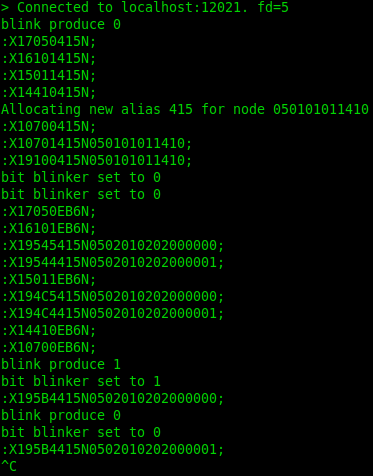

Introduction
Purpose
The purpose of this book is to help you get up to speed on OpenLCB so you can start creating LCC products. There are a lot of concepts and we'll go into just enough depth to get you going, without bogging you down with all the details and possibilites. The standards and the techincal notes have a lot more details.
Focus of this book
We're going to focus on how to create node that can be added to an LCC bus. Therefore, we're going to focus on solutions that use the CAN bus. There are other options, such as WiFi, but we won't cover them in this book.
Assumptions
We're assuming you've used LCC products, and therefore already understand concepts like the producer-consumer model. We also assume you've written code for micro controllers and have worked with I/O pins.
About Names
Let's start with what to some might be confusing—the name LCC vs OpenLCB. LCC is a brand name owned by the NMRA. It covers a set of standards that have been adopted by the NMRA for Layout Command Control (hence the LCC).
OpenLCB is the name of the working group that created the standards approved by the NMRA and continues to create new standards. This is a group of dedicated volunteers who are working to fulfill the dream.
In this book, as in the standards, we'll use the term OpenLCB rather than LCC.
Node
A Node is the basic building block of an OpenLCB network. It's a device that can send and receive OpenLCB messages. We'll describe these messages in more detail in a later chapter.
Each node has a unique 6-byte ID that must be assigned by the manufactorer. We'll describe in a later chapter how you can get your own set of IDs to use in your products (or DIY boards).
Introduction to CAN
Controller Area Network (CAN) is a standard that was initially created in 1981 by Bosch, and has since been used for factory automation and communication networks in cars, to name just a few uses. Today there are hundreds of millions of nodes in daily use.
As a result, there are a number of relatively inexpensive ICs available that fully implement the CAN specifications out of the box. By using CAN controllers and drivers, you do not have to write highly time-sensitive code. Instead, you can focus on implementing support for the messages in the application layers, which is a "relatively" simple task compared with implementing a transport layer.
CAN Messages
CAN transmits messages, called frames on the bus. Every other device (node) on the bus can (and must) listen to all of the traffic on the bus. One of the interesting and useful aspects of CAN is how it handle collisions, which is through arbitration.
CAN frames, in the form used by OpenLCB, consist of a 29-bit header followed by zero or more bytes of data. This is using the extended frame format, also know as CAN 2.0 B.

Arbitration
Arbitration is the process used to ensure that only one node will be transmitting data at one time, thus eliminating collisions and providing extremely reliable communications. It also allows nearly 100% utilization of the bandwidth for the bus.
The arbitration phase relies on drivers only driving the bus low, and never driving the bus high. If two nodes attempt to put different bit values on the bus at the same time, the 0 will always win. Here is a chart that shows how this works:
| Node 1 | Node 2 | Bus Value |
|---|---|---|
| 0 | 0 | 0 |
| 0 | 1 | 0 |
| 1 | 0 | 0 |
| 1 | 1 | 0 |
Arbitration uses the 29-bit header value as a priority value to gain access to the bus, where lower values have higher priority. This mechanism provides very high utilization of the bus’ bandwidth because one node will always win a collision and keep transmitting. In contrast, Ethernet uses a more complex scheme where nodes have to back off, wait a random period, then attempt to transmit again, thus wasting bandwidth.
For arbitration to work sucessfully, each message sent by a node needs to use a unique 29-bit ID. The details for this are handled by the OpenLCB specifications, and are different for different types of messages.
Example Messages
OpenMRN is a C++ library that implements the entire OpenLCB stack with some OpenLCB extensions. The GIT repository hosting OpenMRN also contains some sample applications that can be run as desktop applications to join an OpenLCB network.
Async Blink
We won't go into details on how to build or run this application, as that is covered in the OpenMRN documentation. Instead, we'll use it to give you an idea of what actual messages look like.
The async_blink application can be run without a layout or a CAN OpenLCB network. You can run it entirely on a single computer.
The async_blink application sends an event every second, alternating between 0 and 1.
Here is the output from running the application under Linux:

This probably looks a little overwhelming. Let's start with the message format. Each line is a seperate message sent or received on the OpenLCB network. In this case of OpemMRN and the async_blink application, we're using TCP/IP rather than CAN as the transport mechanism. The current code uses a text rather than binary for the messages, using a format based the GridConnect protocol:
:X <identifier> <N> <Data-0><Data-1>...<Data-7>;
As an example, the first message :X17050415N; has the ID 17050415 and no data. The ID and all other data are in HEX.
There are some log messages in the output that will help us get an idea of what's going on. However, these messages may not make a lot of sense without both understanding the application and a little more about the OpenLCB standards.
How do you map these messages back into the OpenLCB standards to understand what you're seeing?
Decoded Messages
JMRI displays decoded messages. So for this example we connected JMRI to the same TCP/IP OpenLCB bus (all running on the same computer). We'll cover how to use JMRI later. For now we're just going to focus on the messages being sent.

You'll notice the first set of messages all say "CID." This is a Check ID frame that is used as part of allocating an alias for the Node ID.
Node Aliases
The 29-bit headers for CAN messages need to be different for messages sent from different nodes to avoid collisions. The 6-byte Node ID is too long to fit into the header and leave room for more information. So instead, OpenLCB defines a 12-bit alias for Node IDs that are used in the header. By including the alias of the sender in most messages, we avoid collisions.
These aliases are negotiated between the nodes. The CID messages are part of this process. If you're interested in the details, you can find them in section 6 of the specifications (with more information in the technical note):
Check ID (CID)
There is one interesting detail here. The first four messages actually include the full node ID. The async_blink application has the following Node ID defined:
const openlcb::NodeID NODE_ID = 0x050101011410ULL;
If you divide this ID into four parts, you'll get 050, 101, 011, and 410. Now look at the first four messages:
17050415
16101415
15011415
14410415
Look the "middle" hex values: 17050415, 16101415, 15011415, and 14410415. In other words, the full Node ID is present in these four messages. That's the case because each of these messages by itself might not be unique when sent from each node in a segment, but the four messages together will be. Why is this important?
These messages are basically saying that this node wants to use 415 as it's alias and is asking if anyone else is currently using that alias. In this example, there were no replies, which means this node is free to use this alias.
Note: The recommended algorithm for generating aliases in case there are collisions is based on a specific pseudo-random number generator that is dependent on the full Node ID.
Reserve ID (RID)
The fifth message, 10700415, is the Reserve ID (RID) frame. Since the node didn't get any arguments from other nodes, it's now declaring that it's reserved the alias 415.
Alias Map Definition (AMD)
The sixth message reports the full Node ID associated with the alias that was just reserved:
10701415 05 01 01 01 14 10
Initialize Complete
The messages above are part of the node's initialization phase. During this time it's not _"reachable on the network. In other words, it won't respond events or messages addressed to it. Once it's negotiated a Node Alias, it sends out an Initialize Complete message telling anyone who cares that it's not online:
19100415 05 01 01 01 14 10
This is documented in section 3.3.1 (with the CAD ID defined in 7.3.3.1):
Producer/Consumer Events
At this point there is another node that starts the Node Alias negotiation. You should be able to spot and read those messages now. We'll ignore them here.
Part of the required initialization process for a node is for it to publish the list of events that it produces and consumes. Doing so helps with gateways so that bridges can choose which events to send to other segments.
The next set of messages are this published information. The async_blink node supports two different events--one for 0 and the other for 1. It both produces and consumes these events, so it sends out four messages:
19545415 05 02 01 02 02 00 00 00 Producer Identified Invalid
19544415 05 02 01 02 02 00 00 01 Producer Identified Valid
194C5415 05 02 01 02 02 00 00 00 Consumer Identified Invalid
194C4415 05 02 01 02 02 00 00 01 Consumer Identified Valid
The two event IDs are 05.02.01.02.02.00.00.00 and 05.02.01.02.02.00.00.01.
We won't go into the details here. You can find more in the specifications and techinal notes:
- S-9.7.3.1 Event Transport section 4.6
- TN-9.7.3.1 Event Transport
Async Blink Events
Blink Events
Let's take a look at the OpenLCB trace again from JMRI:
The last two messages are what we've buildig toward. These are the events that were sent by the async_blink node. It sends one of these events every second, alternating between the "0" and "1" events.
Let's take a closer look at the message itself, starting with the header:
195b4415
The right three characters, 415, are the Node ID alias that we talked about already. The middle two characters, 5b4, you'll find listed in section 4.1 of S-9.7.3.1 as the Producer/Consumer Event Report (PCER). The data for this message is the Event ID.